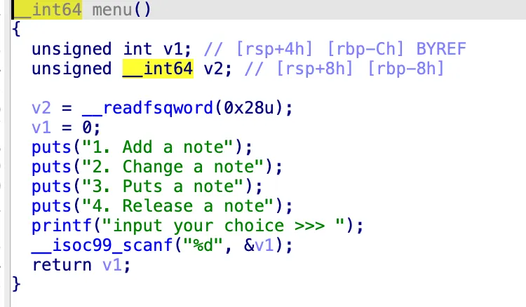
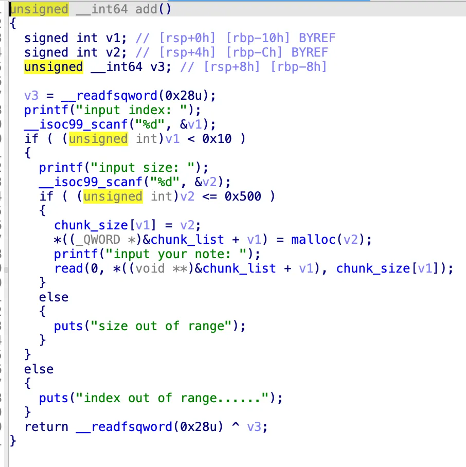
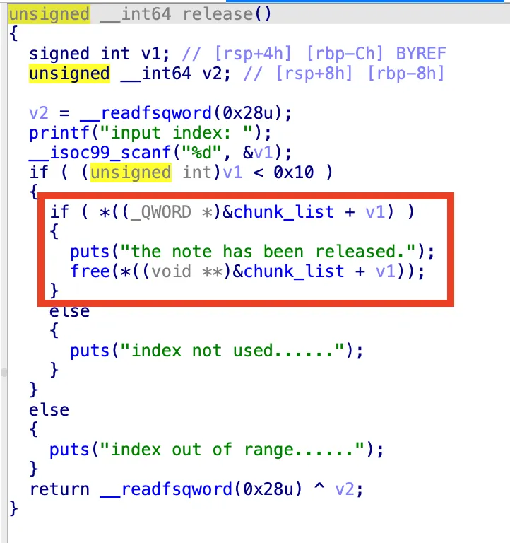
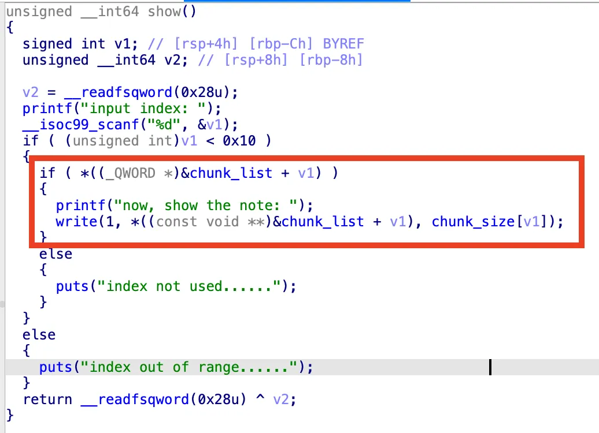
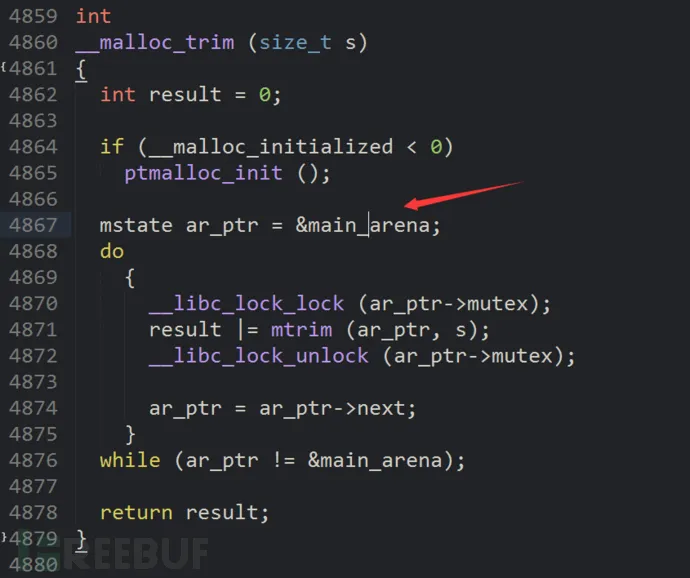
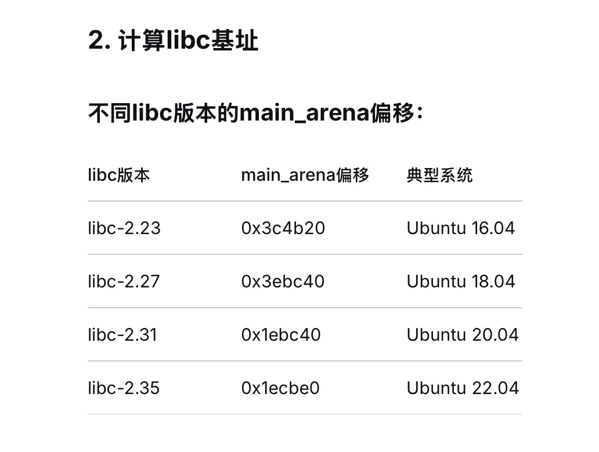

NewStarCTF-Note
Note
这是一道pwn题，题目描述说是从这里开始学习堆的利用，应该是一道比较入门的堆题。
IDA 查看一下源码，是一个比较经典的 记笔记 的题目，就是有 “增、删、改、查” 四个功能的笔记系统：

可以记多个笔记，题目用一个 chunk_list 记录了这些笔记的节点，用 malloc 来创建笔记节点的空间：

漏洞出在 Release 这个功能里，里面会对笔记进行删除，也就是会 free 掉笔记节点空间。但是它 free 之后，没有置 chunk_list 对应的指针为空指针，这就会导致 Use After Free(UAF) 漏洞，即该节点被 free 之后，我们仍然能够访问到它。

同时，在查看笔记的功能里，它也是直接利用 chunk_list 来访问并输出的，意味着我们可以直接查看该 chunk 里的内容来获取一些信息。

被 free 掉的chunk，里面会有 fd 指针和 bk 指针，用来指向同一个链表中的 下一个 和 上一个 chunk。因此，fd 和 bk 通常被用来泄漏程序上下文的一些信息。
checksec 检查程序发现，该程序保护全开，意味着我们需要泄漏 libc 才能继续后面的漏洞利用。
我询问了 DeepSeek 来试图获得泄漏 libc 的方法。他说：“当chunk被free并放入unsorted bin时，其fd和bk指针会指向main_arena内部的地址，而main_arena位于libc数据段中。” 所以，我们可以让一个 chunk 先进入 unsorted bin ，然后通过查看该 chunk 的信息来获取 fd 的值（因为原本放 user data 的地方现在放的是 fd，因此程序的查看功能能让我们直接看到 fd 的值）。
因此，我需要创建一个大于 fast bin 的 chunk，好让他进入 unsorted bin，DeepSeek 推荐为 0x430 这个大小。
同时，我还需要在这个大的 chunk 后面再创建一个小的 chunk ，这样让大的 chunk 与 top chunk 分开，就不会被合并到 top chunk 里了。
因此，我们要做的操作是这样的：
1 | add(0,0x440) #在 0 索引处添加 0x440 大小的 chunk |
这样操作完了之后，我拿到了一个值： 0x7ffff7dcdca0，根据 DeepSeek 说的，这应该是 main_arena 的地址。
但是我在网上搜索，找到了这篇博客，里面说 “可以通过在IDA中观察对应libc的malloc_trim()函数f5后的结果即可获得main_arena距离libc的起始偏移” 。

我用这个方法找到题目给的 libc 里面的 main_arena 的偏移为 0x3ebc40 ，这也是 DeepSeek 说的值：

题目给的 libc 刚好就是 2.27 的。同时 DeepSeek 也说 main_arena 一般位于 __malloc_hook + 0x10 的位置。
但我拿到的 fd 的值的结尾是 ca0 ，并不是 c40 ，其中相差了 0x60 的偏移。通过看博客和问 AI 的方式，我也是了解到，0x60 应该是这个 libc 中，unsorted bin 头与 main_arena 的偏移。
于是 main_arena 的地址就可以拿到了，fd - 0x60 = main_arena ，再根据 main_arena 在 libc 中的偏移就可以确定 libc 的基地址了。
有了 libc 的基地址，我们要进一步考虑怎么获得 shell。
通过学习了解到，比较常用的方法是 劫持 __free_hook 为 system ，然后 free 一个含有 /bin/sh 字符串的 chunk ，这样就可以执行 system("/bin/sh") 了。
__free_hook 是一个可写的函数指针，如果 free 之前，__free_hook 被写入了一个地址，那就会先去这个地址执行该地址所在的函数。
因此如果我们修改了 __free_hook 上的地址为 system 的地址，调用 free 的时候就会优先调用 system 了。
题中的 “改” 的操作，可以直接对 chunk 里的内容进行更改。配合 UAF 漏洞，我们可以在一个 chunk 在 tcache bin 时，就修改它的 fd 指针（原本是用来修改 user data 的部分，已经被 free 了，所以那个位置是 fd）为 __free_hook 的地址，再连续申请两次相同大小的空间，第一次获得正常的在 tcache bin 中的 chunk，第二次就可以获得 __free_hook 所在的空间了。接着就可以往 __free_hook 的地址写入 system 的地址，再 free 一个 /bin/sh 字符串所在的 chunk ，就可以 get shell 了。
这里也有一个坑，我在询问 AI ，fd 指的是 chunk 的头还是 user data 部分的时候， AI 说 fd 会指向 chunk 的头，也就是 user data - 0x10 的位置，但我实际用 GDB 调试发现，tcache 中的 fd 指针会指向 user data 的部分，而不是 chunk 头。
以下为 exp：
1 | #!/usr/bin/env python3 |